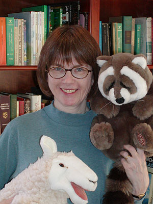

I gobbled up books when I was growing up. I loved Half Magic, My Father's Dragon, Uncle Scrooge Comics, and many more. We didn't get a TV until I was almost finished with third grade. My family played word games on the long car trips we took, so I enjoyed fooling around with words. I studied English literature in college and graduate school. I'd been intrigued by picture books for a long time, but reading to my children made me much more tuned in to them. My daughter and son loved silly stories. We were on a dull car trip in 1982 when I tinkered with animal rhymes, which turned into Sheep in a Jeep. Sheep on a Ship, Sheep in a Shop, Sheep Out to Eat, Sheep Take a Hike, Sheep Trick or Treat, Sheep Blast Off!, and Sheep Go to Sleep have followed.
All information and photo taken from www.nancyshawbooks.com
 [Sheep in a Jeep](/assignment-05/index.html/)